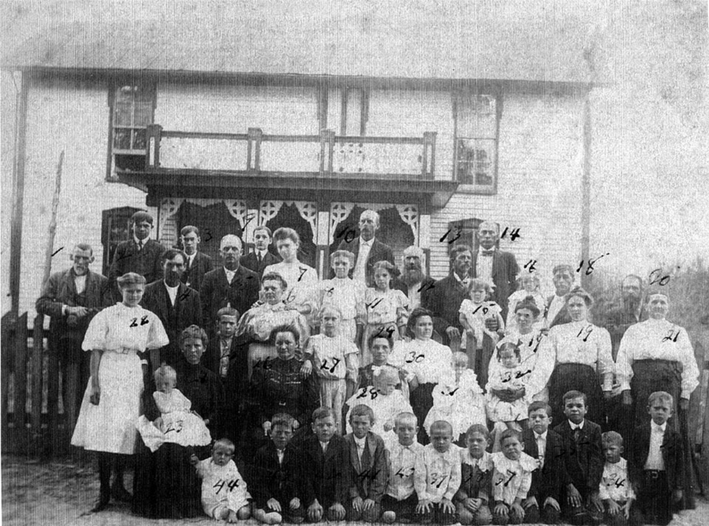

O sobrenome 'Bos' tem uma história rica e é encontrado em muitos países diferentes ao redor do mundo. É
derivado da palavra do inglês antigo 'bos', que significa 'morador dentro ou perto de uma floresta'. Isso
sugere que os portadores originais do sobrenome podem ter vivido perto de uma área arborizada ou floresta.
Imagens da 1° famíla Bos no Brasil

Curiosidades
Significado em Holandês: Em holandês, Bos significa diretamente "floresta" ou
"bosque", reforçando a ideia de uma conexão com a natureza
Dispersão Global: É um sobrenome comum em muitos países, com alta
incidência na Holanda, Índia e Estados Unidos, mostrando uma vasta dispersão
geográfica
Variantes e Etimologia: Além da origem ligada a florestas, o sobrenome
também pode ter derivado do antigo nome pessoal germânico Boso, ou de uma
forma abreviada de Boshard, que pode significar "mau" ou "bravo" em alguns
contextos
Presença no Brasil: Embora seja de origem holandesa, o sobrenome Bos
também está presente no Brasil, com registros de famílias que se estabeleceram
no Rio de Janeiro no século XIX